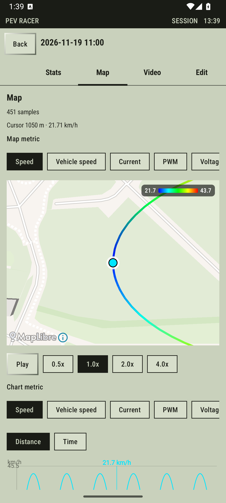

Ride telemetry for Android
Every lap,
in detail.
Record your route, speed and vehicle telemetry. Compare laps and sectors to see where you gain time on the track.
Explore the appDownload sample rideSession replay
Practice Circuit
Speed km/h
Elapsed0:00
Distance km
3:45
Session analysis
From the ride
to the replay.
Record with the gear you ride.
Use phone GPS or connect a supported RaceBox or Dragy logger and Bluetooth vehicle. Available telemetry depends on your hardware.
Find time between the gates.
Build a track from your route, set sectors and compare laps. Follow the speed trace on the map or add telemetry gauges to your own video.
Bring the session to your crew.
Keep rides on your phone or use an optional account to share tracks, enter events and compare lap times on leaderboards.
Inside the app
